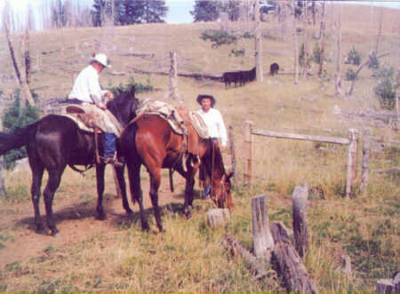

| Below
are five short stories which describe bear encounters on the Crosby Ranch. Have you
ever thought about roping a bear? Read about it. The Ranch
The Crosby Ranch spreads itself over several thousand acres of northwestern Wyoming and
southern Montana. On the Ranch you will find desert prairie and high mountain pastures. In
some places you will run into miles of timber, and in other areas there isn’t a tree
for miles. This ranch has been a way of life for the Crosby family for decades.
Because of the ranch’s location in unpopulated areas, through the years there have
been many interesting encounters with different types of animals. Cows and baby calves are
no match for the likes of bears, cougars, and wolves. Because cattle and sheep are easy
prey, over the years those who have worked on the Crosby Ranch have had many run ins with
a variety of hungry predators. Among those, some of the most exciting have involved bears.

A Bear and a Broom
During the summer the
ranch runs cows on the Big Horn Mountain. This mountain is very high but offers excellent
summer range for them. On the summer permits, there is a cabin which is used when working
those permits. One summer Keith and Esther Stubbs were taking care of those permits.
Around the cabin this particular summer, a bear was causing a lot of trouble.
Bears can be a very big nuisance, getting into everything. Keith quickly tired of the
bear’s constant pestering. Not only was the bear annoying, but it was also becoming
more and more dangerous. He had to do something to get this bear before something serious
happened. He decided he would shoot the bear. This was not an easy task because the bear
was using "Guerilla Warfare." It stalked at night, going unseen, causing
lots of problems around camp.
After some creative thinking, Keith finally came up with a plan. Taking a chunk of bait,
he placed it just outside his bedroom window. Then he tied the bait to a piece of string
and ran the string up and through the window. The plan was to tie the string to his hand
so that when the bear grabbed the bait, Keith would be awakened. He placed his gun in the
corner of the bedroom next to his bed, where it would be the most handy to quickly grab as
he made his jump through the window after the bear. Confident in his plan, Keith went
about the rest of his chores he had left to do before it was time for bed.
Night came. Night in the
forest can be intimidating with shadows and blackness gathering around you. Not only can
it be intimidating but also dangerous with bears prowling about. Keith was hoping that
problem would soon stop. When it was time for bed, Keith checked the bait and made sure to
tie the string on his hand. With everything ready for the assault, Keith went to sleep.
During the night the bear
found the bait and began to rather vigorously tear into it. Keith’s little trick
immediately awoke him from his sleep. He jumped out of bed grabbed his gun from the corner
of the room and flew out the window. As Keith came hurdling out the window, the bear
wheeled around and faced him. There Keith stood in his underwear in the dark with the bear
staring right at him.
It didn’t take long for Keith to realize something was really wrong. One can only
image the feeling Keith had as he stood there in the dark with nothing but his underwear
on, facing a bear with a broom in his hands! If only Esther would have taken a picture of
the spectacle. A picture of this square off would be an all time classic. If it did exist,
it could be one of the few known picture in which a bear would have laughed had he not
been so shocked. Thinking quickly of his odds, Keith made his way back into the cabin
probably faster than he had left.
Esther was definitely in the doghouse when Keith calmed down and found out what happened
to his gun. Earlier that day Esther had been cleaning their bedroom. Being a good wife,
she had tackled the dirty floor with her trusty broom. In the process of sweeping, she had
moved the gun into another corner and put the broom there in its place!! While the broom
did make quick work of the dust balls, it was not the weapon of choice against a 400-pound
fur ball with teeth. With the same game plan and the correct weapon, the bear was his the
next night.
The Bull Elk Permit
Another bear incident
occured over on the Bull Elk permit. On this permit we were running sheep. Our sheepherder
at the time was a man by the name of Sterling. He was an excellent shot with a rifle and a
pretty good sheepherder. One day as he was out with his sheep tending to them, he ran into
a bear. Bears are known to cause major havoc with sheep. Many times a bear will not even
eat what it kills.
A bear will go through a herd of sheep pawing sheep left and right leaving several, even
dozens, dead and maybe only chew on one or two. Sterling knew this and wanted the bear
away from his sheep. By the time Sterling shot the bear with his 30-30 Winchester, it was
very close to him. Unlike some bears, this one seemed to be very aggressive.
It charged him, closing the distance between them quickly. Sterling quickly unloaded his
gun into the bear, desperate to stop its charge. Pumping the bear full of lead did not
stop it, though. It continued running right for him determined to tear him apart. With no
time to re-load, Sterling took to a tree. He climbed as fast as he could, since trying to
out-run the bear would have been stupid.
After getting up in the tree, the bear started to show signs of lead poisoning, and after
awhile crawled over behind a log. Sterling watched the bear go down and carefully made his
way down the tree. He re-loaded his gun and made his way to the bear. It was apparent the
bear was pretty much dead when he got to it. Just to make sure, though, he shot it a
couple of more times and then headed off for camp, a little shook up by the whole episode.
The next day his nerves had settled down somewhat, and he went back to look at the bear
more closely. Upon arriving at the spot where the bear had last lain, he found that it was
gone! Looking around the spot, it was apparent that during the night sometime, the bear
had gotten up and crawled off. This was amazing because the bear had probably been shot
with at least 20 rounds the day before!
Fast is Better
Often when bears attack, you
don’t want to run; however, sometimes it’s the only option. This was the case
for my dad and Cliff Osborne. Many years ago, the forest service had set up a dump
for your trash on the Big Horn Mountains. Today there is no dump of any kind, and you are
required to take your trash off the mountain regularly.
However, this was not the case many years ago, and Dad would have to take the camp trash
to the mountain dump to dispose of it. One time Dad was doing this with Cliff, one of our
hired hands. They had dumped out the trash when they saw two little cubs climb up a near
by tree. Dad and Cliff were watching these two little cubs when the mother showed up on
the scene.
The pick-up was little ways off, and the bear wasn’t; so they started running for the
safety of the pickup. Cliff had a disadvantage in this race. When he was younger, he
chopped half his foot off with an ax. Foot or no foot, though, inspired by a angry bear,
he could move right along: that is, until he tripped on that bad leg. After tripping and
falling, Cliff looked up to see Dad sitting in the pick-up.
Dad, of course, was looking on intrigued by the possible outcomes of the race. Luckily,
the bear was just far enough behind that Cliff, back on his feet, was able to barely make
the pick-up before the bear. As he crawled in, he turned to Dad and said, "Yah, just
leave me out there for bear meat". With a grin Dad shot back, "I just figured
all I had to do was beat the slowest guy"! While sitting in the safety of the
pick-up, they then watch the bear make circles around them. Instead of growling, it was
making several types of grunting noises. Finally the bear had enough and left with her
cubs.
Close Call
The cabin was the scene
of yet another bear encounter. John Hopkin was a camp tender who worked for us several
years ago. His job was to make sure the sheepherders were well supplied. This particular
summer John was tending camps on the Big Horn Mountains. Since his job required full time
attention, he was staying in the cabin up there. Toward evening one night, John was
working around the cabin getting everything tied together and ready for the next day.
Suddenly, from the darkening timber immerged a charging bear. John saw the bear coming at
him. Unarmed, he wheeled around, sprinting for the cabin. He had to get to a gun, or at
least get to some cover. The bear was extremely aggressive, staying in close pursuit. John
jumped up on the porch, threw open the door, and raced for his gun. Grabbing his gun, he
wheeled around looking for the bear. It was not hard to find, since it was standing up
against the screen door John had just come through.
Taking aim, he fired through the screen door and dropped the bear. Later, they found out
why the bear had attacked for no particular reason. This bear was a ‘problem
bear’ from Yellowstone. The forest service thought that by transferring it to the Big
Horns, they would solve the problem. The Forest Service was wrong; although, the problem
was solved.

Roping a Bear
On the Crosby Ranch, bear
stories come and go; but one this is perhaps the best one. It was June 21, 1989. The
outfit was moving cows in on the Dry Head Ranch. This ranch sits just east of the Pryor
Mountains and south of the Crow Indian Reservation in Montana. This country is wild and
rough. It takes a good pick-up and 3 to 4 hours to make it into the Ranch. On this day,
Dad decided to move a hundred head or so north east of the ranch house.
Dad wanted to get a better spread on the cows so that more of the feed would be utilized.
Moving the cows proved to be no problem. It was a clear, warm day. We moved them for quite
sometime before we reached the desired pasture. It was starting to get late in the
afternoon, so we turned around and started riding back to the ranch house, a distance of a
couple of miles.
We hadn’t gone far before one of the hired men, Vance Perguoy, yelled,
"Bear!" Like a bullet shot out of a gun, he was off and running. My oldest
brother, Brett, was right behind him on one of the fastest horses we ever did own. Unlike
most people, they were not running away from the bear but towards it! To understand this
insanity you need to understand that it has forever been every cowboy’s dream on the
ranch to rope a bear!!!!
The creature was a black
bear, and it was off to our right on a hill. Brett and Vance chased the bear off the hill
into an open flat. The bear’s speed was amazing. It could maneuver through the
sagebrush with easy. Because of the bear’s speed, it was hard for Brett and Vance to
keep up. The rest of us, including my other two brothers, my dad, my mom, and myself,
followed at a distant parallel to them keeping the bear from diving into the canyon that
sprawled out for miles on one end of the flat.
The flat was full of sagebrush, rocks, and grass. Towards the end of this flat lay a lone
tree. The bear headed up and into it allowing us to catch up. Most might have given up at
this point of the chase. However, Dad, Brett, and Vance were determined to rope this bear.
Ropes started flying at the bear. As the three of them were taking turns trying to catch
the bear, the rest of us sat on our horses around the tree watching.
Dad threw his rope up, and the bear batted it down. However, this took the bear’s
attention away from Vance, who had thrown his loop a split second after Dad. Vance’s
rope caught hold, and out of the tree the bear came. Quickly, Dad threw his rope on the
bear. The bear wasn’t exactly happy at this point. He charged Vance and almost
crawled into the saddle with him before Dad could pull up his slack in the rope and jerk
the bear off his horse.
Finally Brett threw his rope on. With three ropes on him, the bear was unable to attack
anyone. Congratulations followed with a recap of the chase. It seemed all had gone as
smoothly as it could when roping a bear. Yes, they were proud of themselves. Then it
dawned on them: there was no way of getting their ropes off the bear! Dad had a new rope
and wasn’t about to give it up; Brett said he had just gotten his rope broken in;
Vance claimed his rope was his favorite.
No one wanted to sacrifice their rope, but they couldn’t figure out how to get them
off. This predicament caused some serious reflection for a moment or two. Then all of a
sudden the bear, which had quieted down, twisted, turned, snorted a little, and was free!
It was truly an amazing thing to see. It was like he had turned inside out. Luckily for us
the bear had had enough and quickly made his way toward the canyon.
As one can see, there
have been many bear encounters on the Crosby Ranch. More than likely, there will be a few
more. In the years behind us, everybody has managed to stay in one piece when dealing with
these bears. With a little luck, the years ahead will prove to be the same. As for the
stories, it’s never boring around our fire at night.
|